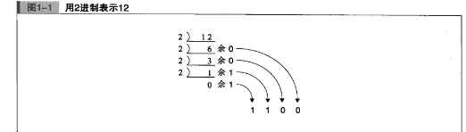
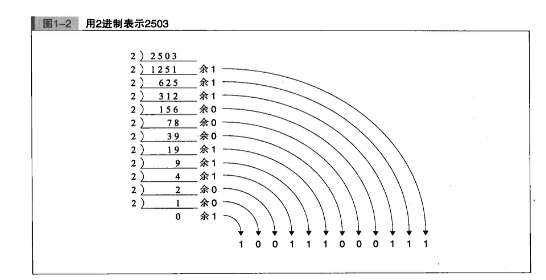
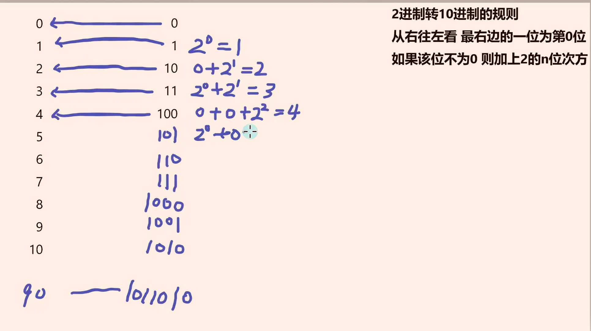
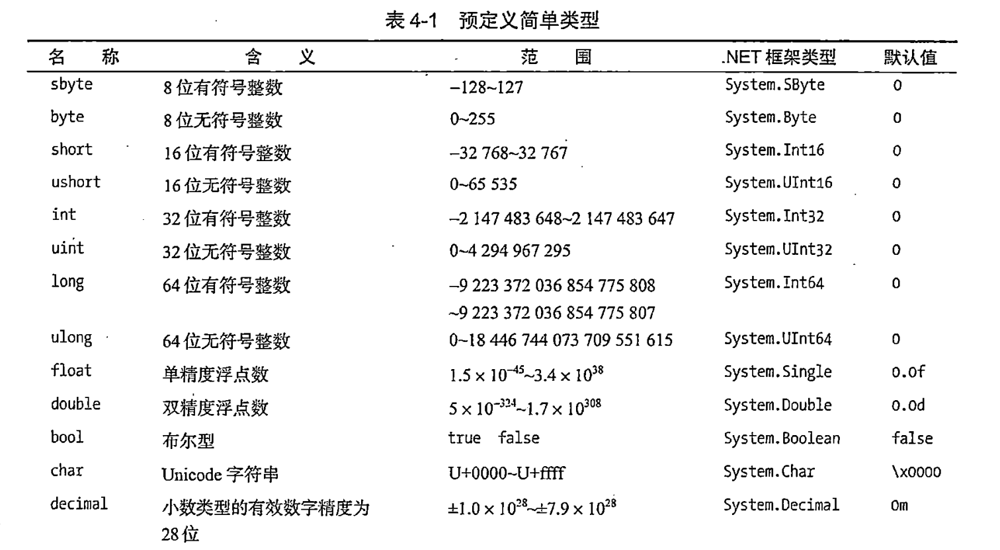

💡 根据 遗忘曲线：如果没有记录和回顾，6天后便会忘记75%的内容
读书笔记正是帮助你记录和回顾的工具，不必拘泥于形式，其核心是：记录、翻看、思考


2 进制转 10 进制

💡01变量
C#
//有符号的变量
sbyte a;// sbyte -128~127
int b; //-21亿~21亿多
short c;// -32768~32768
long d;//-9百万兆~9百万兆
//有符号的变量
byte e;// sbyte 0~256
uint f;//0~42亿多
ushort g;// 0~65535
ulong h;//0~ 18百万兆
//浮点数
float/double 是二进制浮点类型，无法精确表示所有十进制小数（比如 0.1），计算时会出现精度误差：
float i=0.1234115f;//存储7/8位有效数字，多余的四舍五入 ，
C#中默认是double类型，加f在C#中表示是float类型.
double j;//存储15~17位游戏数字；
decimal(十进制数) k=0.1231414155155m;
//存储27~28位有效数字，不建议使用,加m表示是decimal，不建议使用，
//特殊类型
bool w=false;//布尔类型
char aa = '中';//字符，单引号，只能存储一个字符
string ab="测试代码" ;//字符串变量类型 1字节=8比特=8位 例：1001 0100 无符号 正整数集 ulong(64位)uint(32位) ushort(16位)byte(8位) 有符号 整数集 long(64位) int(32位)short(16位)sbyte(8位) 浮点数 小数 decimal(128位)double(64位)float(32位) 特殊字符 字符串 字符 string(无位数限制)char(16位) bool(8位) 声明常量 变量前加“const”关键字
C#
const float PI = 3.14159265f;
💡02变量的本质
C#
#region 变量大小
//通过sizeof方法可以获取变量类型所占存储空间（单位：字节）
int sbyteSize=sizeof(sbyte);
Console.WriteLine("sbyte所占内存空间 "+sbyteSize+" 字节");
//有符号变量，无符号变量，特殊变量（string除外）均可通过sizeof()获取字节数
//sizeof 无法获取string类型的字符数，因为string类型的长度没有定死，是可变的
#endregion💡03变量的命名规范
C#
int age;
string myName;
//驼峰命名法 第一个单词首字母小写，后面单词首字母大写💡04常量
C#
const pi =1;
//常量一般用户 特定的 角度，π，坐标等
//常量必须进行初始化，
//常量不能被修改💡05转义字符
C#
Console.WriteLine("我和你在\n");
// \ n 换行转义字符
Console.WriteLine("@我和你在\n");
// @\n 取消转义字符💡06类型转换
隐式转换
C#
符号的整型 long->int->short->sbyte (->代表 能装入 或者 能存储)
有符号的整型ulong->uint-ushort->byte
浮点数 double->float
特殊类 string bool 不存在隐式转换，
char 之所以能够隐式转换为部分整形和浮点数，
是因为 char 类型是一个 16 位无符号整数，用于表示 Unicode 字符的编码值。取值范围是 0 到 65535，所以它可以隐式转换为比它宽度更大的数值类型int、long、ushort、ulong 等都可以 ）
十进制数 decimal 无法存储 double 和 float
不同类型之间的隐式转换
有符号的整型->无符号的整型（前题 无符号的整型要在有符号整型的范围内）
浮点数（decimal，double，float） -能存储> 有符号和无符号的整型强制转换
C#
1.括号（）形式的整形之间的强制转换）要注意范围问题，如果强制转换比如Uint 转 int，就会报错
short b=10;
int a=(int)b
2。浮点数之间的强制转换
float A=1.3f; doube b=1.33333;
A=(float)b 这里强制转成float后 原double的小数点后的精度会丢失
同理，float强制转成成int，float后的小数点精度也会丢失（直接小数点后的数会消失）
3.整型强制转成成 char ，char中存储的就是ASCII码对应的字符
4. bool 和string 不能通过（ ）的方式强转
5.字符串转换为整形，浮点数，字符（字符串必须能转换成对应类型范围的字符才行）
int a =int.parse("3");
float a=float.parse("1.333");
double a=double.parse("1.333");
char a =char.parse("1");
6.Converst 方式 强制转换 精度比（）强转高，小数点后会四舍五入，
可以把bool类型转换成整型，true为1，false为0
string c="4";
int a=Converst.ToInt32(c); a=Converst.Toint32(true)
sbyte a = Convert.ToSByte("1");
short a = Convert.ToInt16("1");
int a = Convert.ToInt32("1");
long a = Convert.ToInt64("1");
byte a = Convert.ToByte("1");
ushort a = Convert.ToUInt16("1");
uint a = Convert.ToUInt32("1");
ulong a = Convert.ToUInt64("1");
float a= Convert.ToSingle("13.2");
double a = Convert.ToDouble("13.2");
decimal a = Convert.ToDecimal("13.2");
bool a = Convert.ToBoolean("true");
char a = Convert.ToChar("A");
string a = Convert.ToString(123123);
7. 其他类型转换成string类型
int number=12324; number=ture,number='我'，number=1.343f;等等
string c= number.ToString();💡07异常捕获
C#
try
{
//用于字符串 转换成 整形的时候，防止数据溢出
}
catch
{
//如果出错会执行 catch中的代码
}
finally//可选部分
{
// 不管出不出错都会执行这里的代码
}💡08运算符
C#
算数运算符
+ - * / %取余 ++ -- += -=
---------------------------------------------------------------------------------
字符串拼接 方法一
string str="我的";
str+=str+3+3; 输出的是 我的33；
str+=1+3+4+5; 输出的是 我的13（这里会先进行数字计算）
str+="你的"+1+2+3+4+5;输出的是 我的你的12345；
字符串拼接只能用+= 其他都不能用
字符串拼接 方法二
string.Format("我是{0}，我今年（1）岁，我想要（2）","天才"，4，"学习");
控制台打印
Console.WiteLine("我是{0}，我今年（1）岁，我想要（2）","天才"，4，"学习");
Console witeine ("The value: {0:c}", 500); 打印出来是货币 The value: $500.00.
---------------------------------------------------------------------------------
逻辑运算符
&& || ! &&优先级高于|| &&2个都为true结果才能为true， ||一个为true结果就是true
位运算符
位或| 位与& 异或^ 取反~ 左移<< 右移 >>
---------------------------------------------------------------------------------
位与& 数值转换成二进制计算 有0则0 都满足0才0
int a=1, 二进制为 001
b=5; 101 这里 B对A的二进制进行从左到右的对位运算
int c=a&b 001 =1 这里 c=1
---------------------------------------------------------------------------------
位与& 数值转换成二进制计算 有1则1 只有要1就是1
int a=1, 二进制为 001
b=3; 011 这里 B对A的二进制进行从左到右的对位运算
int c=a|b 011 =3 这里 c=3
---------------------------------------------------------------------------------
异或^ 数值转换成二进制计算 相同为0，不同为1
int a=1, 二进制为 001
b=5; 101 这里 B对A的二进制进行从左到右的对位运算
int c=a^b 100 =4 这里 c=4
---------------------------------------------------------------------------------
取反~ 数值转换成二进制计算， 对位运算 0变1,1变0
int a=5; 0000 0000 0000 0000 0000 0000 0000 0101 int是32位这里要完整的二进制写出来
1111 1111 1111 1111 1111 1111 1111 1010 有符号的整型 左方第一个是符号位，1为负
int c~a =-6
---------------------------------------------------------------------------------
左移<< 右移 >> 让一个数的二进制数进行左移和右移，左移几位就右侧加几个0，右移几个就去掉几个数
int a=5; 101 int a=5; 101
int c=a<<2 10100 int c>>2 1
---------------------------------------------------------------------------------
条件运算符
< >= < <= == !=
---------------------------------------------------------------------------------
三目运算符 bool类型？ bool类型为true的返回内容:bool类型为false的返回内容
true？"天使"："恶魔" 这里返回 天使，bool为true💡09条件分支语句
C#
if(true)
{}
else
{}
int index
switch(index)
{
case:0 //必须是常量，常量必须初始化 并且 不能修改
break;
case:1
break;
case:2
break;
default: // default 可以省略
break;
}
switch(index)
{
case 0:
case:1
//这里贯串 执行 case 2代码
case:2
Console.WriteLine("XXX");
break;
default: // default 可以省略
break;
}💡10循环语句
C#
while(true)
{
continue;//是配合while使用的的，跳回到while循环开始
break;//退出这个while循环
}
do{
}
while(true);
for(int i=0;i<array.Lenght;i++)
{
break;
}
foreach(int var in array)
{
}